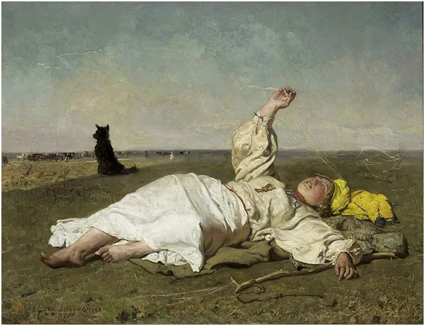
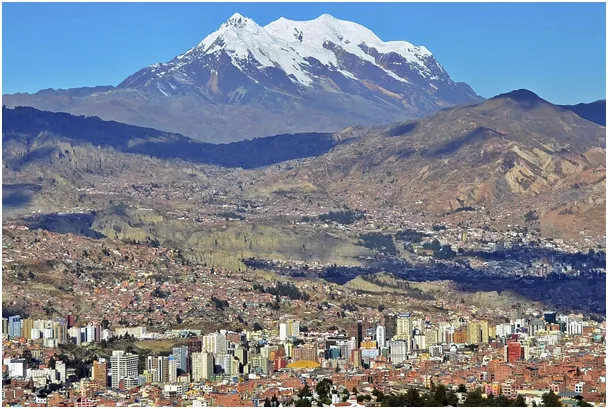
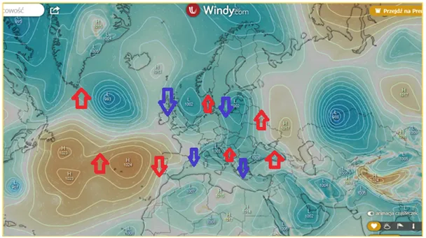
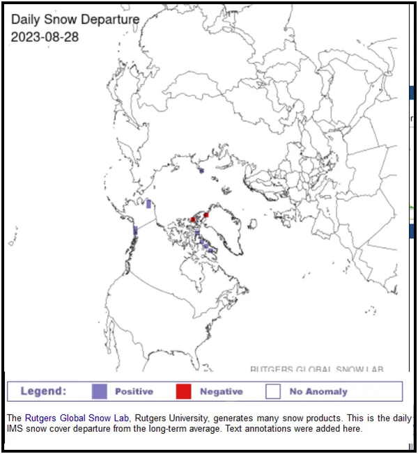

Ciśnienie rządzi światem, choć nie istnieje!
Obiektywnie ciśnienie nie istnieje, jest jedynie różnicą pomiędzy sumą wektorów pędu cząsteczek w różnych obszarach dowolnej przestrzeni, a jednak używamy tego pojęcia, które bardzo ułatwia nam życie. Jest wiele takich pojęć. Może warto stworzyć słownik "pożytecznych rzeczy, których nie ma"?

Pogoda to lokalny stan atmosfery, która otacza Ziemię cieniutkim welonem na wysokość do 100 km. Tylko pierwsze 5 km nadaje się do życia; wyżej mamy już bardzo niskie temperatury i ciśnienia. Ponad 5 km w górę powietrze jest tak rzadkie, że przeciętny człowiek bez treningu nie jest w stanie funkcjonować. Są takie miasta jak La Paz w Boliwii położone ok 4000 m n.p.m. Turyści z dolin czują się tam kiepsko.

Dziś nad Europą aż cztery niże, czyli cyklony wirujące w lewo i oznaczone jako "L" od low pressure.

Na mapce przepływów powietrza rysuje się już układ wymiany i mieszania powietrza z północy i południa. Dociera do nas mokre, cieple powietrze znad rozgrzanego Morza Śródziemnego i Atlantyku, co daje cieple opady. Co ma rosnąć niech rośnie!

Ostania mapka zrobiona jako rzut znad bieguna północnego pokazuje, że bilans śniegowy w Arktyce jest już dodatni. Niebieskie kwadraciki to obszary z nowymi opadami ostatniej doby, gdzie śnieg się utrzymuje, a czerwone to obszar, gdzie śnieg topniał. Wrzesień na dalekiej północy to już początek zimy. Na szczęście do nas ona ma jeszcze bardzo daleko. Babie lato tuż, tuż.
Paweł Klimczewski